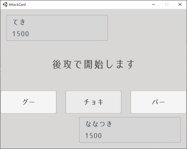
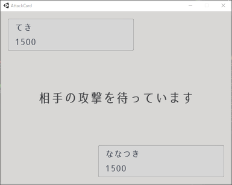
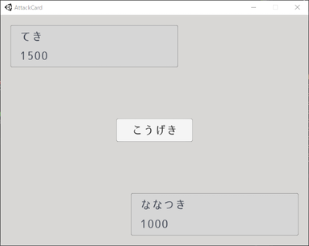
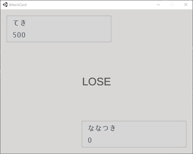

こんにちは。ななつきです。
今日は交互に殴り合えるようにしました。
前回宣言通り じゃんけんに満足できないので殴り合いするゲーム です。殴り合ったところで、固定ダメージにしてあるため結果は変わらないのですが。
画面の様子
後攻になりました。じゃんけんに納得できないから殴り合おう！

と言っても、向こうが先攻なので待機……。

攻撃。

そして待機。
最終的には、当然負けと。じゃんけんに満足できないなら、順番気にせず先に殴り始めれば良いのにと言う感じですね。

どんな実装か
PUN2の PunTurnManager を使ってターンを管理しています。前回のじゃんけんも同じです。
以下で、最低限 PunTurnManager が動くと思います。長くなるのでdocコメントは削ってます。
細かいところも省略しちゃいましたが、コメントにざっくり何をしたのか書いておきました。
1
2
3
4
5
6
7
8
9
10
11
12
13
14
15
16
17
18
19
20
21
22
23
24
25
26
27
28
29
30
31
32
33
34
35
36
37
38
39
40
41
42
43
44
45
46
47
48
49
50
51
52
|
public class CardGameManager : MonoBehaviourPunCallbacks, IPunTurnManagerCallbacks
{
private PunTurnManager turnManager;
public void Awake()
{
this.turnManager = this.gameObject.AddComponent<PunTurnManager>();
this.turnManager.TurnManagerListener = this;
this.turnManager.TurnDuration = 5.0f;
}
private void Start()
{
// ここで最初のターンを開始させている。
if (PhotonNetwork.IsMasterClient)
{
this.turnManager.BeginTurn();
}
}
// プレイヤーがターン終了したとき
public void OnPlayerFinished(Player photonPlayer, int turn, object move) {}
// 動作したとき
public void OnPlayerMove(Player photonPlayer, int turn, object move) {}
// ターン開始
public void OnTurnBegins(int turn)
{
// ここで、「こうげき」ボタンもしくは待機中だよな文言を表示しています。
}
// 全プレイヤーがターン終了
public void OnTurnCompleted(int obj)
{
// ここで、今表示させている「こうげき」ボタンなどを破棄しつつ、次のターンを開始させます。
if (PhotonNetwork.IsMasterClient)
{
this.turnManager.BeginTurn();
}
}
// タイマー終了
public void OnTurnTimeEnds(int turn) {}
// 攻撃ターンを終了させる
// 「こうげき」ボタンをクリックしたときに呼びます。
public void AttackTurnEnd()
{
this.turnManager.SendMove(1, true);
}
}
|
ターン開始について
1
2
3
4
|
if (PhotonNetwork.IsMasterClient)
{
this.turnManager.BeginTurn();
}
|
ターン終了について
1
|
this.turnManager.SendMove(1, true);
|
true のときがターン終了です。false にするとターンは終了せず移動だけしたことになります。カードを複数枚出す時に使えるでしょうか。
今回は、待機ユーザーはターンが開始した瞬間に終了させ、攻撃側はボタンをクリックした時点で終了するようにしています。
次回予告
次はどこを実装するか迷っていますが、以下のどちらかにしようと思います。
- 時間経過で、ターンを自動終了させる
- 複数のアクションから、何を実行するか選択できるようにする。